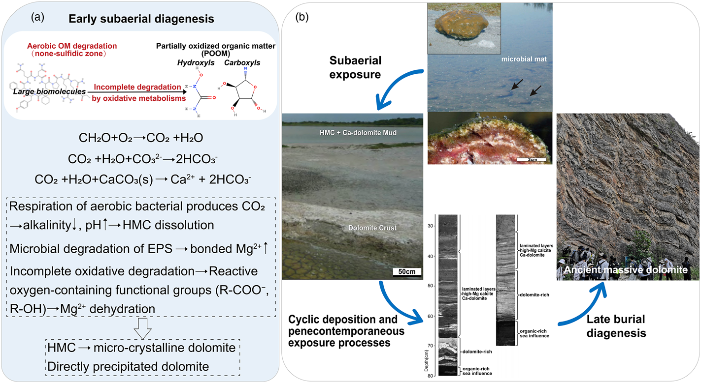

Dolomite formation during penecontemporaneuous subaerial diagenesis: evidence from modern dolomite crusts forming in lagoon Brejo do Espinho, Brazil

Resumo em Português
A litificação precoce de lama carbonática durante o estágio de exposição subaérea em condições semiáridas foi proposta como facilitadora da formação de dolomita. Entretanto, como os processos biogeoquímicos durante a diagênese subaérea promovem a formação de dolomita permanece pouco compreendido. Neste trabalho, empregamos uma abordagem multiproxy para investigar o processo de formação de dolomita por meio da análise de crostas dolomíticas modernas em formação na lagoa Brejo do Espinho.A análise petrológica revela que as crostas consistem em calcita magnesiana e dolomita coexistentes. As baixas concentrações de Fe e Mn indicam a formação de dolomita em condições óxicas, enquanto a concentração mais elevada de Sr em crosta bem litificada sugere precipitação primária de dolomita induzida por bactérias. A composição isotópica de Mg das crostas exibe valor mais leve do que o da dolomita de sabkha moderna, sugerindo processos de dolomitização e fontes de Mg distintos. Os valores de δ¹³C mais negativos das crostas em relação aos da lama carbonática não litificada na lagoa Brejo do Espinho indicam a incorporação de carbono orgânico depletado em ¹³C. Os processos biogeoquímicos relacionados à decomposição de matéria orgânica durante a diagênese subaérea geram matéria orgânica parcialmente oxidada que promove a desidratação do Mg²⁺ e potencializa a dissolução da calcita magnesiana primária, desencadeando a transição de calcita magnesiana para dolomita e/ou a precipitação direta de dolomita. A antiga "fábrica de dolomita" operou por meio da deposição cíclica de sedimentos carbonáticos e diagênese subaérea penecontemporânea.